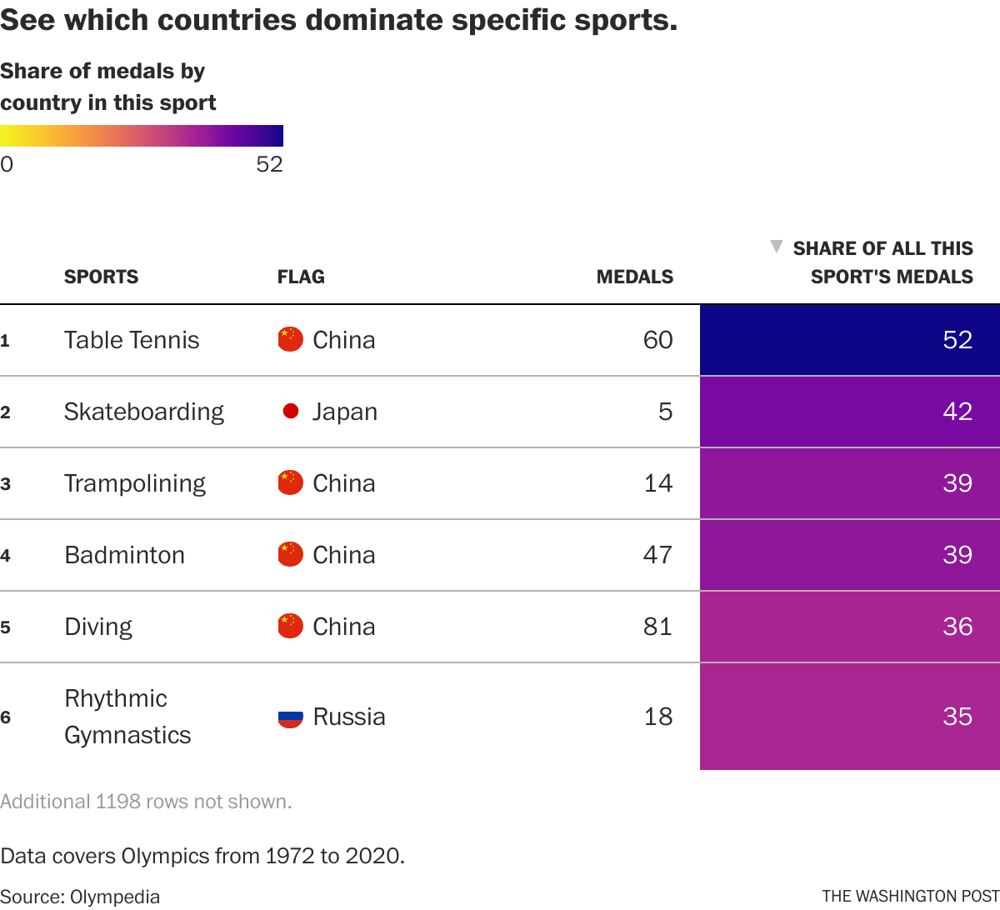
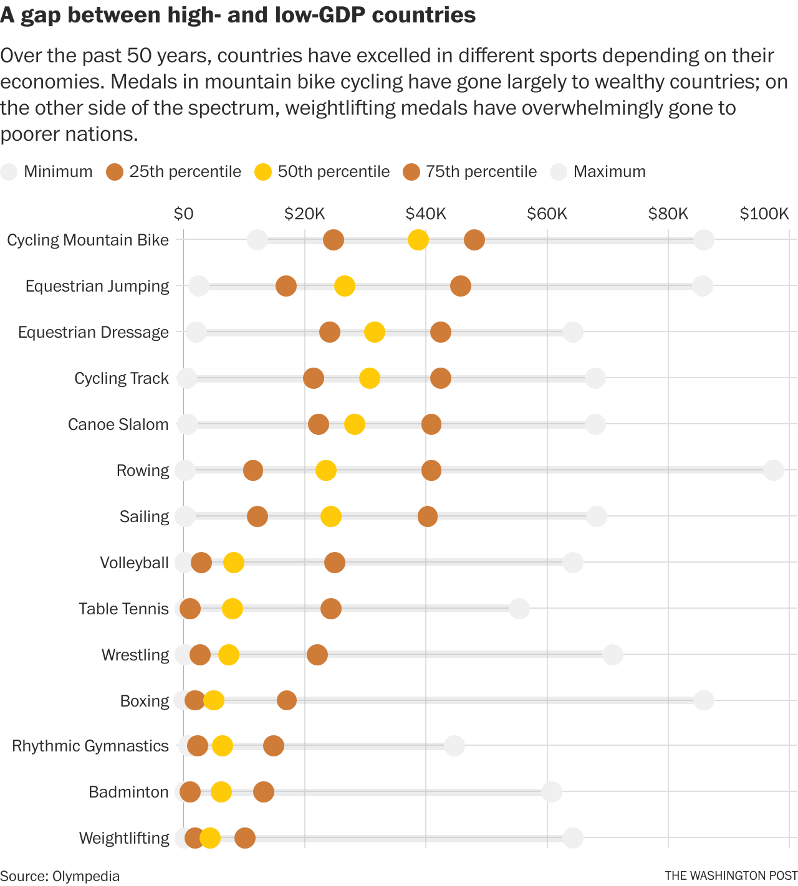
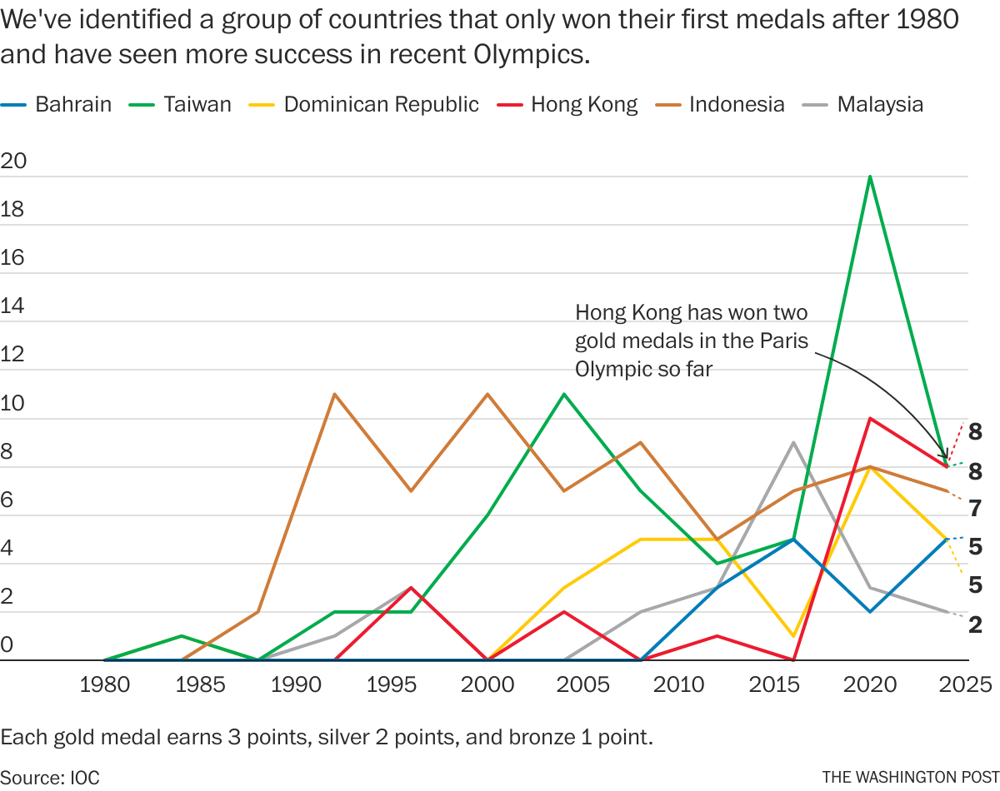

How tiny countries find the Olympic podium
In the Olympics, size really does matter.
Big countries — those with the most people and the most robust economies — tend to dominate the Games. But that doesn’t mean there aren’t places where smaller nations can show their might.
We analyzed data from the 1972 Munich Games to the 2021 Tokyo Games and found that low-cost-of-entry sports, the addition of new sports to the Games and specialization in just a handful of events sometimes can be a country’s ticket to Olympic success.
Dominating vs. left out
It’s true that you often hear the national anthems of the United States, China, and Russia at the Olympic Games. We found that 10 countries — with those three at the top — have won almost half of all medals in the past 50 years. When we look only at gold medals, we see similar results.
With Russia out of the Paris games, United States, China and host country France lead this year’s medal count list entering Thursday.

In contrast, 72 countries haven’t won a single medal in the past 50 years. Most have relatively small populations — 46 of them fall into the bottom half of countries by population. Their economies, measured by gross domestic product per capita, also are often on the lower end. None of the countries without medals have both their GDP per capita and population in the top half.
Economics dictate which sports rule
Wealthier countries perform much better in swimming, sailing, cycling, and equestrian events — sports that rely not only on the athletes themselves but also on equipment, coaching, and training opportunities. For example, in sailing, countries with extensive coastlines and the ability to afford yachts — such as Denmark, Sweden, the United States and Australia — often dominate. In equestrian jumping, European countries with historic traditions in the sport and the means to maintain horses, such as Germany, Switzerland, the Netherlands and Sweden, are more likely to win medals.
Countries with lesser economies tend to specialize in sports that don’t require complex equipment or venues — such as wrestling, weightlifting and taekwondo, or ball sports ranging from table tennis to volleyball.
“The barriers to entering the sport are relatively low, more will try it out, and more will then be identified as potential Olympians," said David Forrest, a professor at the University of Liverpool who has researched sports economics.
Some countries dominate through this approach. For example, China over the past 50 years has won a third of all diving medals and more than half the podium spots in table tennis. Brazil has led the world in both volleyball and beach volleyball, winning 14 percent and 31 percent of all medals, respectively.
But money isn’t everything. Some countries with high GDP still don’t see success at the Games. For example, wealthy Singapore has only won four medals, and Iceland three, since 1972. Similarly, Saudi Arabia and the UAE have only won four and two medals, respectively.
A single route to success
Another way countries can ascend to the podium is to concentrate on a single sport. We found that 37 countries in the past 50 years won all their medals in just one sport. Even more countries regularly medal in only a couple of sports.
For instance, all the medals Afghanistan and Kosovo have won are in taekwondo and judo. Kenya, Jamaica and Ethiopia shine in the track and field. Those countries have won 97, 78 and 54 track and field medals, respectively.
Over half of Iran’s and Azerbaijan’s medals are from wrestling, while field hockey accounts for 80 percent of Pakistan’s medals — and all three of its gold medals.
New sports can give some a chance to shine
Since 2000, 10 new sports have become official Olympic events.
It turns out that medal distribution in new sports is usually monopolized by just a few countries. For example, in triathlon, which was added in 2000, Britain, Australia and Switzerland have claimed more than 45 percent of the top spots. In rugby sevens, introduced in 2016, island countries in the South Pacific — Fiji and New Zealand — have won half of the medals awarded. In Paris this year, New Zealand women’s team won gold, while the Fiji men’s team earned silver.
In cycling BMX racing, which became an Olympic event in 2008, Colombia, the United States and the Netherlands have taken more than 60 percent of the spots on the podium.
New sports have the potential to significantly impact the medal picture. India has only won 23 medals since 1972, in part because cricket dominates Indian sports and society, attracting the country’s male athletes with its high financial rewards while diverting talent away from other sports. Cricket will return in the Los Angeles Olympics in 2028.
Removing sports can also cause issues. “Boxing awards lots of medals and is another one of the ‘democratic’ sports. If it is removed from L.A., this will decrease chances of Third World countries winning medals,” Forrest said. The International Olympic Committee’s ongoing feud with the International Boxing Association has raised questions about whether boxing will remain an Olympic sport 2028.
Emerging powers
If you’re tired of seeing Olympic medals dominated by a few superpowers, we’ve identified ten countries that won their first medals after 1980 and now have performed well in the past three Olympics. For example, Indonesia didn’t win any medals until 1988, but now its athletes regularly reach the podium in weightlifting and badminton. Qatar and Bahrain each won their first medals in 2012, and now have both been on the podium in the past three games.
Methodology
The Post used medal data from the 1972 Munich Olympics to the 2020 Tokyo Olympics from Olympedia.
Medals won by the Russian Olympic Committee in 2020 were included in Russia’s total. We used 2021 economic indicators to evaluate the 2020 Tokyo Olympics.
Given the large time span, we assigned GDP-per-capita to each sport’s medalists, then used percentiles to differentiate between high-GDP-per-capita and low-GDP-per-capita countries. We focused our analysis on sports where the differences between high GDP and low GDP countries’ outcomes are most pronounced.
In weighing emerging Olympic power countries, we excluded countries that emerged after the collapse of the Soviet Union and breakup of Yugoslavia and Czechoslovakia. To avoid one-time flukes, we used two standards: emerging countries needed to have won medals in the past three consecutive Olympics or have won four or more medals in the last two games.